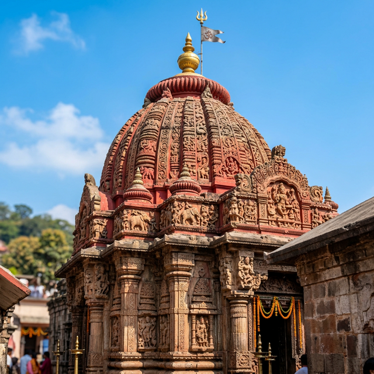

Assam
Guwahati, the largest city in Assam and the gateway to Northeast India, is a vibrant metropolis nestled between the banks of the Brahmaputra River and the foothills of the Shillong plateau. It is a city of ancient temples, most notably the Kamakhya Temple, and modern urban growth. The Brahmaputra, one of the world's great rivers, defines the city's character, offering stunning vistas and a lifeline to the region. From its bustling markets to its peaceful river cruises, Guwahati is a perfect blend of spirituality, history, and modernity.
Guwahati is located in the Kamrup Metropolitan district of Assam, on the southern bank of the Brahmaputra river.
The best time to visit is from October to April when the weather is pleasant and conducive for sightseeing.
By Air: Lokpriya Gopinath Bordoloi International Airport (approx. 20 km) is the primary gateway to the Northeast.
By Train: Guwahati and Kamakhya railway stations are major railheads connecting the region to the rest of India.
By Road: Well-connected by National Highways (NH-27, NH-37) to Shillong, Kaziranga, and other cities.
- Try local Assamese delicacies like Masor Tenga (sour fish curry) and Khar.
- Respect the dress code and customs when visiting the Kamakhya Temple.
- Carry light woolens if visiting during the winter months (December–January).
- Use ride-sharing apps or local rickshaws for convenient city travel.